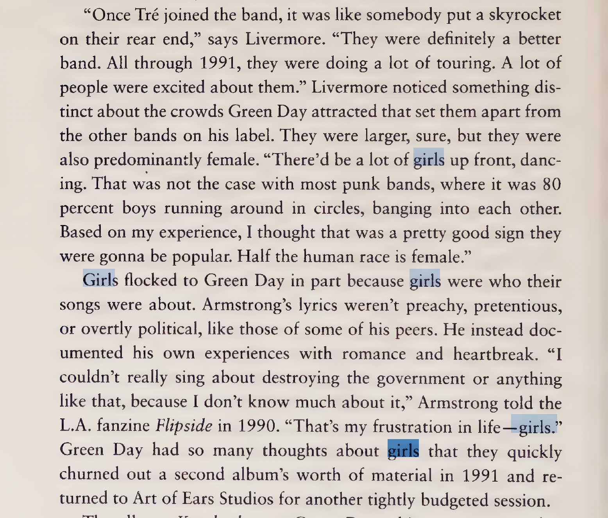

Historically, fans haven’t held much of a place in rock journalism. Reporting tends to focus on the bands themselves, since these are usually the people that audiences most want to hear from. (As someone who also wants interviews with my favorite band members, I will admit that this approach makes sense.) But, the problem comes when these journalists start publishing full length histories about a genre like emo where they spend the entire book doing what they know how to do best: interviewing musicians. With emo, this presents a real problem. The bands are mostly straight white men, but the fans are mostly not. By focusing so singularly on the bands themselves, these accounts of emo suggest that white men are the only people who influenced the genre’s trajectory in the 2000s, when in reality they don’t even hold a majority stake in the subculture.
To illustrate some of the issues with this approach, I’ve pulled examples from two recently released emo histories written by established white male music journalists in the past few years: Dan Ozzi’s Sellout (2021)1 and Chris Payne’s Where Are Your Boys Tonight? (2023).2
So, with that...
In Sellout, the words “woman” and “women” come up 43 times almost exclusively in the sections on The Donnas (all-women band), The Distillers, and Against Me! (bands fronted by women). The other few instances of these words are in the My Chemical Romance chapter specifically when women fans talk about the band’s resonance with young women and queer people, or when the author talks about how Blink-182 related to their audience through songs about being “inept with women.” The word “girl” is used 77 times, usually in reference to songs about girls, people’s girlfriends, or in a context like this:

“Feminin(ity)” only comes up in the book three times, and the only real mention of queerness happens when Laura Jane Grace discusses her transition in the Against Me! chapter. But, as I hope I have illustrated in this project, there is so much queerness in emo that gets overlooked because the people writing these histories are either incapable or unwilling to see emo’s queerness or women’s contributions to the scene. This is largely because in order to see these in emo, you usually have to look beyond the bands themselves, which emo journalism has historically been pretty bad at.
By comparison, in Judith May Fathallah’s Emo: How Fans Defined a Subculture, which is about emo fandom specifically, the words “woman,” “women,” and “girl” come up a combined 264 times. “Feminin(ity)” is used 96 times, “queer” 48 times, “gay” 53 times, “lesbian” twice, bisexual six times, and transgender once. Although it’s impossible to really quantify how well a book engages with gender by the inclusion of certain words alone, these numbers do give us insight into how central these themes are to the book’s discourse. In books like Fathallah’s Emo, which prioritize emo’s predominantly queer and feminine fanbase, gender and sexuality are more prevalent to the discourse than in traditional emo journalism.
In the My Chemical Romance chapter of Sellout, we get a particularly efficient comparison between how journalists and band members talk about emo’s feminine androgyny versus how female fans talk about these things. The men tend to use evasive and coded language, while the women are more direct:
Dan Ozzi and MCR guitarist Frank Iero talking about MCR fans:
“Not every show was a knockout. Gerard Way’s penchant for theatrics, in particular, elicited some eye rolls from older cynics who found the group too wimpy. The band wasn’t for everyone, but the people who got into them really got into them. At every show, a dozen or so MCR faithfuls waited sheepishly in the corners for the band to take the stage, then pushed through the crowd to sing along up front. The band identified their handful of people every night and played directly to them, with an attitude that said “Fuck everyone else.”
“Coming up, we’d play punk shows, we’d play hardcore shows, we'd play with Christian rock bands, but we didn’t fit in anywhere,” says Iero. “Very few people were nice to us. It wasn’t cool to be our band. There was a bit of a flamboyance to it, a bit of theatrics to it. We didn’t have breakdowns, we didn’t sound like what was cool. But I think there were kids that were hearing our band who didn’t fit in anywhere else and were like, “‘That’s me. I’m a fucking weirdo. I also don’t belong anywhere else. Maybe I belong at these shows.’”
Geeks, nerds, outsiders, and misfits gradually gravitated to My Chemical Romance, and collectively dubbed themselves the MCRmy.”
vs
Cassie Whitt (fan archivist) and Sarah Lewitinn (long-time fan and MCR’s first manager) talking about being MCR fans:
“From the very beginning, they'd say, ‘If you’re racist, if you’re sexist, if you’re homophobic, get the fuck out of the audience. We don’t want you,” says Cassie Whitt, a fan and MCRmy archivist. “They were creating this environment where we were all celebrating each other for being weird, or different, or women, or people of color, or trans, whatever we were. ‘My Chemical Romance said it was okay, so if you don’t agree, fuck you.’ They never once encouraged the machismo that was prevalent then. They poked fun at that, even. A lot of the way Gerard presents himself is quite feminine. As a young girl, you could see some hypermasculine guy onstage and feel intimidated, whereas these guys were the opposite of that.”
Women, especially, were made to feel welcome by My Chemical Romance. “They were a feminist band early on,” says Lewitinn. “They had a female manager, they had a female lawyer. Their world was filled with strong women, which I think was representative of how they felt about women. That whole scene was such a boys’ world, but My Chem did a really good job of making women feel included. If a girl was in the mosh pit, Gerard would shout her out for being unafraid. They made them feel welcome, and not as eye candy. As a female, we were seen as commodities. We were walking wallets. But he made them feel like they were part of something, and more than just tagging along with their boyfriends or buying T-shirts.”
This inclusion of the fan perspective goes a long way to complicate the overrepresentation of straight male perspectives in emo, which tend to discuss femininity and queerness in more roundabout terms, ultimately producing a discourse around emo that sidelines women and queer people. Unfortunately, fans are rarely centered in histories of emo. I also think that the impulse to talk around the femininity and queerness of emo’s fanbase usually comes more from a place of attempted neutrality than direct malice. Journalists certainly didn’t used to have a problem calling My Chemical Romance a band for teenage girls, least of all Dan Ozzi who in a 2013 Noisey column suggested renaming third-wave emo “Your Little Sister’s Favorite Band-core.” It seems like in an era where open misogyny is (somewhat) less tolerated in rock journalism, emo’s predominantly female and queer fanbase has gone from demonized to invisible.
In Where Are Your Boys Tonight? (a title that I could write a whole standalone essay about), emo band members and various industry people talk about My Chemical Romance’s use of feminine aesthetics. Repeatedly, contributors choose to not engage with the queerness inherent to wearing makeup or women’s clothing in favor of more matter-of-fact descriptions of what they were seeing. Beyond the women’s jeans that were popular across the scene at the time, MCR drew particular attention for their anachronistic embrace of makeup:
GABE SAPORTA: It was the next generation of emo, right? The theatrical, makeup, all-black stuff wasn’t a thing until they came around. They had different influences they drew from. To be honest, I didn’t get My Chem at the very beginning. And then I got it.”
AARON GILLESPIE: Underoath took My Chemical Romance and this band called Brazil on tour. My Chem was the first band I knew that would get ready to go onstage every night. We were dirtball kids; those guys put fucking makeup on.”
CHRISTIAN MCKNIGHT: I met Frank, I met Gerard and Mikey, and we became friends. A month later, they play Long Island, and I saw it that day. The second time I saw them I was like, there’s something about Gerard—this Liberace, Freddie Mercury, punk rock rolled into one. The dude fucking writes comic books. He went to school to learn how to make toys. And he took all of that and injected it into this angsty, post-punk apocalypse. It just fucking worked, dude, it fucking worked.”
JOHN FELDMANN: I did this big animal rights event in Orange County, that My Chemical Romance played with the Used, Good Charlotte, and Goldfinger. I hung out with Gerard and he was in his David Bowie–kinda phase with makeup and all that. I remember Gerard open-mouth kissing Bert. They were just fucking around and being idiots. Gerard and Bert were wasted. They were like the toxic twins.”
STEVEN SMITH: Gerard and me painted our faces, the band walked me through how they did their makeup. And . . . I’m such a dick . . . Gerard shows how he does his face paint to me and I’m like, “Did you go to clown school to learn this?” He goes, “Art school.” I went, “Same thing.”
AARON GILLESPIE: I remember My Chem complaining about how hot they were because they were wearing all that shit. In Phoenix it was like 110 degrees and they were wearing all that makeup. But people loved it. Kids were dressed up in that stuff at Warped, just makeup melting everywhere, all summer.
ANDY GREENWALD: Black Parade blew people’s minds, because no one had that ambition. We were so used to bands doing it the, quote, unquote, right way, meaning the R.E.M. way, which didn’t really exist anymore. So when I wasn’t writing about bands like My Chemical Romance, I was writing about bands like Death Cab, because people were like, “They’re doing it the right way.” You know, the indie labels, the lack of drama, blah, blah, blah. And then there were bands like the Strokes or whatever who came from an indie or punk ethos where it’s like, “You’re not supposed to wear makeup or sing in character.” And then My Chemical Romance fucking did it.
I hope by this point, the issues with sidelining emo fans have been made relatively clear. When you ignore emo’s predominately queer and feminine fanbase, the whole subculture gets misrepresented as a straight-male phenomenon (the demographic which makes up the majority of the bands). This is equally true in racial terms: emo fans of color have always been a massive and vital part of emo around the world, but emo journalism’s focus on white men in bands has largely normalized whiteness as emo’s default state. The introduction of the internet also provided a certain degree of anonymity to these groups in the 2000s, who often found it easier to access emo online than in person due to the hardcore scene’s historic bias toward white men.
When they do talk about fan behaviors, emo journalists tend to prioritize live shows and other in-person events over online discourse. This approach obscures all of the important contributions that women, queers, and people of color have made to the emo subculture, which mostly happen online. Throughout it’s history, women, queers, and people of color have all had a much harder time accessing underground rock subcultures like emo, which are biased toward white men. In most cases, the “local basement scenes” that white men speak so fondly of are just groups of friends that you have to infiltrate in order to access. In order to know where and when shows are happening, you have to know the right people, which means that scenes often end up a lot like (white) boys clubs. Once the social internet went mainstream in the 2000s, women, queers, and people of color suddenly had a way to participate in musical subcultures that were previously a lot harder for them to access. A teenage girl might not be able to safely attend a show in a random twenty-three year old dude’s basement, but she could connect with other fans and build a virtual scene of her own online.
Put simply, the biggest problem with emo journalism for the past two decades is that the men writing emo’s story just don’t know what it’s like to be a teenage girl on the internet. I would wager that very few of them have ever been on AO3 (or even know what it is). I doubt that they have ever gone faint at the sight of Gerard Way in a miniskirt while watching some random fan’s Instagram livestream of a show. I doubt they have ever experienced the sense of community felt around the world on November 5th 2020 when Supernatural ship Destiel went canon and Vladimir Putin had maybe(?) died. (I promise this is relevant to the cultural development of emo.)
It’s hard for me to cite examples of stuff that simply doesn’t exist. I would love to provide you with a compilation of emo journalists talking about Tumblr culture or fanfiction or shipping, but they acknowledge the existence of these things so rarely that there’s almost nothing for me to show. The lone mention of fanfiction in either Sellout or Where Are Your Boys Tonight? shows Dan Ozzi constructing a world where “fans” (in a vague, un-gendered sense) “drag” unwilling emo idols into sexual situations against their will:
“Entire corners of the internet were devoted to MCR fandom. The MCRmy endlessly dissected lyrics and videos on message boards and forums, cobbling together elaborate theories. Gerard Way fan art became a popular category on art-sharing sites like DeviantArt. Some fans penned fanfic about the band members in which they were vampire hunters or outlaws, while others dragged them into erotic territories.”
This lack of attention paid toward girl-driven online cultures completely obscures the fact that teenage girls are the main party responsible for emo’s success in the 2000s. And their influence on the culture was mostly happening in underground online spaces, that, by design, evaded the public eye (and therefore public scrutiny). As a theorist and fan, I respect the need for spaces like these to remain niche and hidden from a mainstream culture that ridicules, shames, and problematizes everything that girls and queers do. In general, I’m hesitant to drag protected underground spaces out into the light and subject them to the violence that they were trying to hide from in the first place. (I, for one, have been personally appalled at the recent proliferation of articles by major publications openly talking about yaoi, AO3, and rpf in the wake of Heated Rivalry’s success.) So to a certain extent, I’m grateful for emo journalism’s negligence toward girl-driven internet subcultures. But I also think that the way girls have been written out of emo’s history is a massive problem, and I’m trying to solve it. Which necessitates revealing some of their (our) secret cultural contributions. It’s complicated. I feel conflicted about it every day that I write this. I just hope my emo history does more for us than theirs.
1 Dan Ozzi, Sellout, (Mariner Books, 2021).
2 Chris Payne, Where Are Your Boys Tonight? (Dey Street Books, 2023).